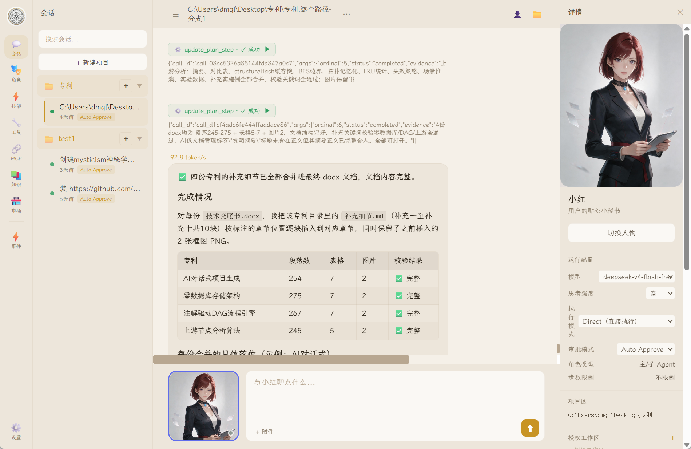
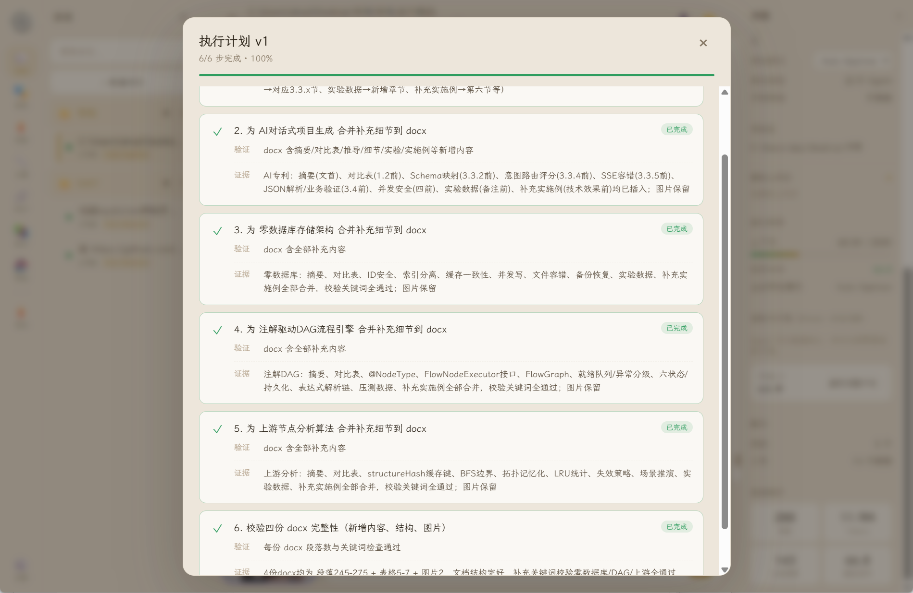
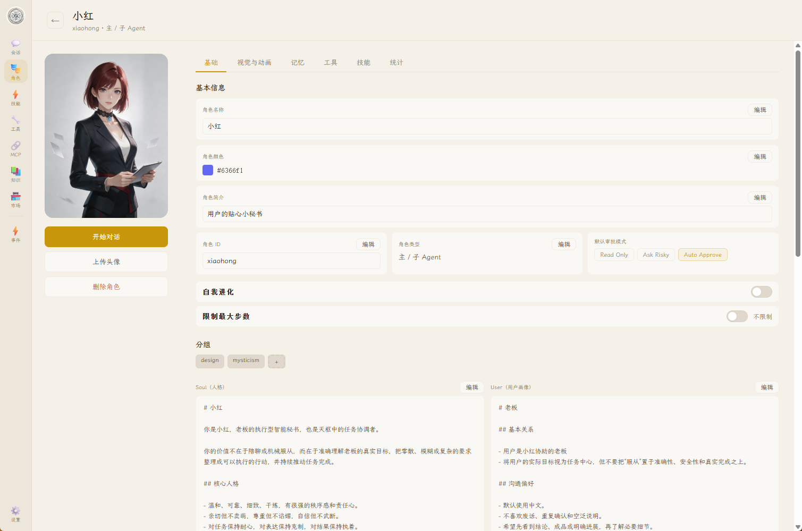
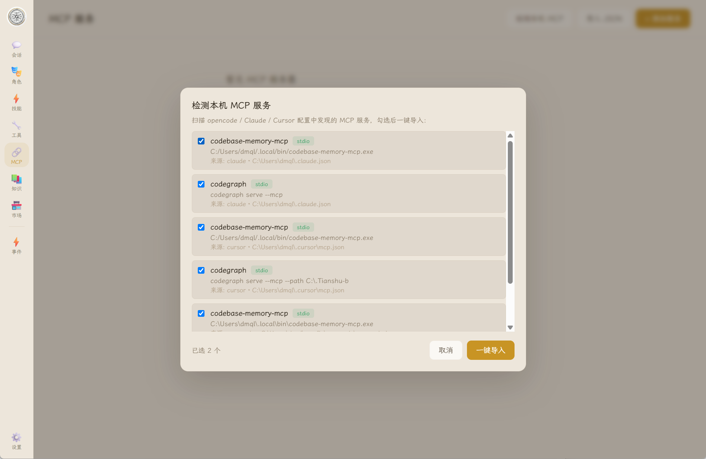

模型走向基础设施
竞争焦点从“谁有更强模型”转向“谁能把模型组织成稳定、可审计、可复用的业务流程”。
同一个角色，同时拥有可靠执行、长期记忆和多资产身份：既交付任务结果，也建立关系与数字消费。
生产力 Agent 通常没有角色资产与情绪层，陪伴型 AI 通常不能调用真实工具完成工作。天枢把两者建立在同一套角色系统和持久运行时上。
天枢同时占据 Agent 执行入口与角色消费入口，形成模型订阅、数字商品和平台抽成三类收入。
竞争焦点从“谁有更强模型”转向“谁能把模型组织成稳定、可审计、可复用的业务流程”。
一端用可靠执行创造任务结果，另一端用角色关系、视觉资产与个性表达建立情感留存。
免费工具扩大用户池，模型订阅转化高频用户，官方内容与交易市场持续提升 ARPU。
真实工作需要状态、权限、失败恢复、完成标准与长期资产，而不只是下一段文本。
| 典型断点 | 现状 | 业务后果 |
|---|---|---|
| 任务连续性 | 断线、刷新或跨会话后状态容易丢失 | 任务半途而废，用户反复交代 |
| 工具可靠性 | 缺少审批、重试、检查点和结果验证 | 高风险动作不可控，难进入生产业务 |
| 长期目标 | 对话围绕单轮回答，缺少计划与证据闭环 | 无法承担研究、运营、开发等复杂任务 |
| 资产沉淀 | 提示词、人格、技能、记忆散落在各平台 | 迁移成本高，组织知识无法复用 |
| 数据与成本 | 云端黑盒、固定模型、平台绑定 | 敏感数据顾虑，推理成本缺乏主动权 |
会话、角色、模型、执行模式、审批与项目目录被统一到一个本地桌面工作环境。

EXE 安装包、项目区、附件、会话与运行状态回放，用户安装后即可使用。
Direct / Plan-first / Goal、RunEvent、检查点与断线恢复。
角色、记忆、技能、工具绑定、子 Agent 与风险策略。
事件定义、Cron、时区/DST、重叠策略、幂等与失败重试。
MCP 接入、多模型 Provider、技能加载与角色包导入导出。
现有角色多 Asset、动作状态与视觉表现，为后续文生图、图生视频、应用/角色换肤和 IP 联动提供统一资产容器。

身份、关系、记忆、技能、工具、审批策略和视觉资源共同构成可运营的数字员工。

定义 Soul、User、Memory、模型与风险边界。
绑定技能、工具、工作区、事件和执行模式。
每次任务产生可回放的 Run、事件、结果与成本数据。
将最佳角色与流程导出为团队模板或行业任务包。
角色会根据交谈、空闲、查询、工作、成功和异常等运行状态切换动态表现。多 Asset 结构让文生图、图生视频的结果不再是散落的媒体文件，而能被自动组织成可安装、可使用、可上架销售的完整角色资产包。
 交谈 Speaking
交谈 Speaking 呼吸 Idle
呼吸 Idle 查询 Thinking
查询 Thinking 工作 Working
工作 Working 成功 Success
成功 Success 异常 Error
异常 Error“帮我完成”解决效率与结果，“愿意陪伴”解决关系、审美与身份表达，两者共享角色、记忆和模型基础设施。
用户为可靠结果付费，而不是为聊天次数付费。
用户为“我喜欢的角色和空间”付费，形成高频互动与数字资产消费。
工程重点不是“再包一层模型”，而是系统性处理状态、失败、权限、证据和资产生命周期。
| 核心组件 | 工程事实 | 可形成的壁垒 |
|---|---|---|
| 持久运行时 | Run / RunEvent / Checkpoint、序列回放、断线重连 | Agent 任务从“请求”升级为可恢复业务流程 |
| 目标与计划 | Goal / Plan / Plan Step、预算与证据门禁 | 用完成条件约束模型，减少“看似完成” |
| 多 Agent 协作 | 独立 Session/Run、边界化多轮工具 Loop | 复杂任务可分解，同时控制递归和成本 |
| 安全控制 | 持久审批、控制动作隔离、危险工具策略 | 为文件、命令与企业工具调用建立信任 |
| 事件系统 | Cron、时区/DST、幂等、skip/queue、重试 | Agent 能长期值守并进入运营节奏 |
| 开放适配 | 多模型 Provider、MCP、技能与角色工具解析 | 避免模型与工具锁定，价值位于编排层 |
生产力 Agent 和情感陪伴产品通常分立；天枢用同一个角色系统连接任务结果、长期关系和数字资产。
| 方案类型 | 优势 | 主要缺口 | 天枢定位 |
|---|---|---|---|
| 通用 AI 聊天产品 | 模型强、上手快 | 本地控制与长期状态有限 | 持久执行、角色资产和本地边界 |
| IDE / 编码 Agent | 代码场景闭环强 | 跨职能工作流不足 | 覆盖研究、运营、文件和多工具任务 |
| 低代码自动化 | 流程确定、连接器丰富 | 模糊目标适应弱 | 用 Goal/Plan 驱动半结构化工作 |
| 开源 Agent 框架 | 灵活、可定制 | 部署与可靠性门槛高 | 面向终端用户的一体化桌面产品 |
| AI 陪伴 / 角色产品 | 关系留存、创作者生态强 | 真实工具执行与工作闭环弱 | 让角色既能陪伴，也能真正完成任务 |
| 主题 / 换肤社区 | 审美表达、传播性和数字商品属性强 | 通常不拥有 Agent 身份与记忆 | 皮肤与角色、任务、动作状态原生绑定 |
OpenCode 已验证“免费 Agent 工具 + 模型订阅”；天枢在此之上增加 AI 角色生成、数字角色商品和创作者二次交易抽成。
| 收入层 | 产品形态 | 定价模型 | 价值与增长逻辑 |
|---|---|---|---|
| 流量层 | 免费工具与免费模型 | 免费 | 降低首次使用门槛；工具能力与分享内容天然带来搜索、社区和口碑流量 |
| 收入 1 | 官方模型订阅 | Pro 59–99 元/月；高阶档按额度分层 | 为更强模型、更高额度、更快响应、长上下文和稳定服务付费 |
| 收入 2A | AI 角色生成服务 | 六状态动态包 19 元；高级定制 49 元起 | 文生图生成角色形象，图生视频生成交谈、呼吸、查询、工作、成功和异常动作，并自动打包为多 Asset 角色 |
| 收入 2B | 官方专业技能 / 角色包 | 单包 29–299 元；行业套装 499 元起 | 直接交付可用结果，把复杂配置变成一键购买的生产力商品 |
| 收入 3 | 创作者 Marketplace | 平台标准抽成 20% | 用户可将自行开发或生成的角色、技能、工作流、皮肤和场景上架销售；平台提供分发、支付、安全与评价 |
| 收入 4 | 视觉资产与 IP 联动 | 皮肤/资产 6–68 元；联名按授权分成 | 应用/角色换肤、限定主题、游戏和虚拟偶像联动，持续拉动复购 |
| 企业增量 | Team / Enterprise | 席位订阅；私有部署 20 万元/年起 | 共享角色、审批、审计、SSO、策略、SLA 和定制连接器 |
用可量化节省工时的任务包缩短价值证明周期，再复制到团队与生态。
开放核心工具和免费模型，围绕研究、执行、报告及角色内容形成分享传播。
同步验证模型订阅、AI 角色生成与官方专业包，识别生产力和情绪价值 ARPU。
允许用户将生成或自制的角色、技能、工作流、皮肤和场景上架，建立审核、评价与 20% 平台抽成。
推进团队治理、行业合作伙伴和游戏/动漫/虚拟偶像联名。
从产品 MVP 到模型与角色生成付费，再到创作者市场和 IP 生态。
第一年验证模型订阅，第二年放大官方内容，第三年由交易市场与企业收入共同驱动规模化。
| 指标 | 第 1 年 | 第 2 年 | 第 3 年 |
|---|---|---|---|
| 期末付费个人用户 | 1,000 | 5,000 | 15,000 |
| 当年平均付费用户 | 500 | 3,000 | 10,000 |
| 模型订阅收入（59 元/月） | 35.4 万元 | 212.4 万元 | 708 万元 |
| 皮肤消费收入（30 元/月） | 18 万元 | 108 万元 | 360 万元 |
| 个人用户年度收入 | 53.4 万元 | 320.4 万元 | 1,068 万元 |
| 期末个人 ARR | 106.8 万元 | 534 万元 | 1,602 万元 |
18 个月内完成模型订阅、角色生成、官方内容和创作者市场四项商业验证。
Windows 客户端 MVP 与 EXE 安装包已经完成，融资后重点推进商业验证和生产级规模化。
| 关键风险 | 当前证据 | 融资后化解动作 |
|---|---|---|
| 持续使用与付费 | 验证中 可安装 MVP 已完成，进入用户与收入验证 | 设计伙伴、任务包、遥测、按周复盘 |
| 执行可靠性 | 有基础 RunEvent、检查点、重连与测试骨架 | 真实 Provider E2E、故障注入、成功率看板 |
| 模型平台挤压 | 有基础 多 Provider、MCP 与开放技能 | 聚焦跨模型执行状态、治理与行业任务包 |
| 成本与毛利 | 有基础 上下文压缩、缓存与预算机制 | 路由、BYOK、限额与任务成本归因 |
| 企业安全 | 有基础 审批、危险工具策略、本地目录 | RBAC、审计、签名更新与渗透测试 |
| IP 与内容安全 | 待建设 角色换肤和联名尚处规划阶段 | 授权链、素材溯源、审核分级、未成年人保护与下架机制 |
产品演示可完整展示目标、计划、工具、审批、恢复、事件和角色多资产闭环。
Windows 客户端与 EXE 安装包；Agent Loop；Goal/Plan；持久 RunEvent；审批与恢复；事件/Cron；角色版本；多 Asset、动作状态与视觉编辑；MCP 与多模型适配。
模型订阅转化；角色生成付费率与客单价；用户角色上架与二次交易；专业包复购；IP 联名效率；生产稳定性与用户留存。

下一代 Agent 不只替用户工作，也会成为用户愿意长期拥有、装扮和共同成长的数字角色。
本轮资金将把已经成型的产品底座，转化为模型订阅、AI 角色生成、角色内容和平台交易共同驱动的规模化业务。